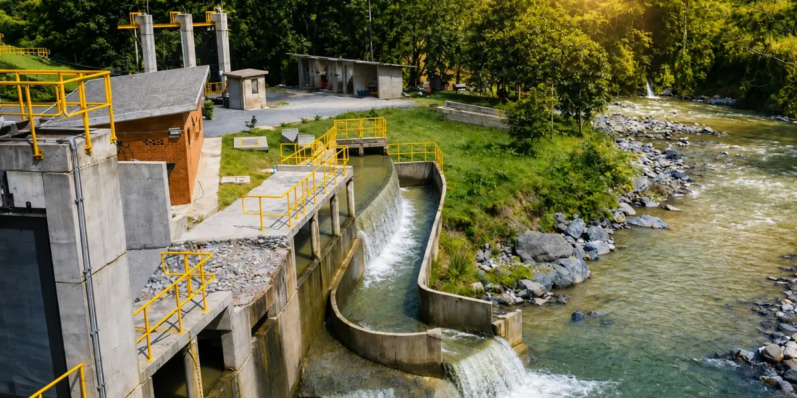
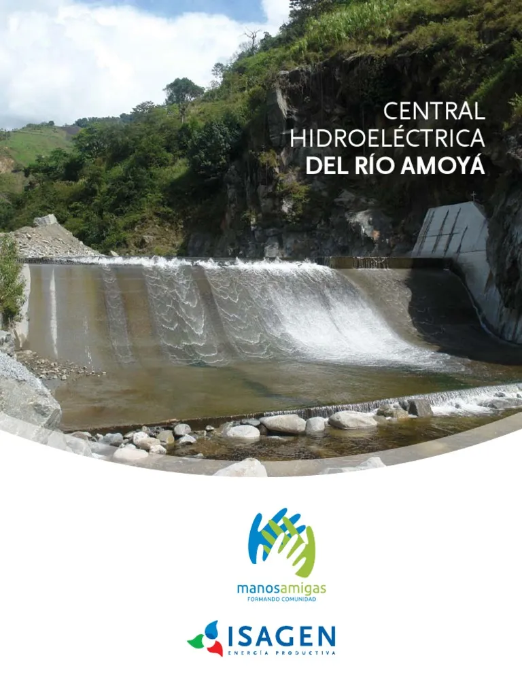
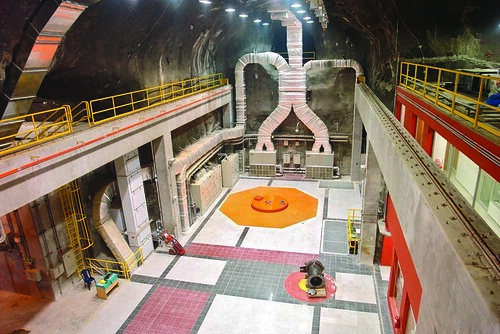
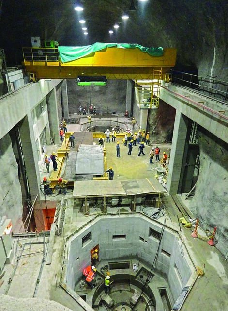
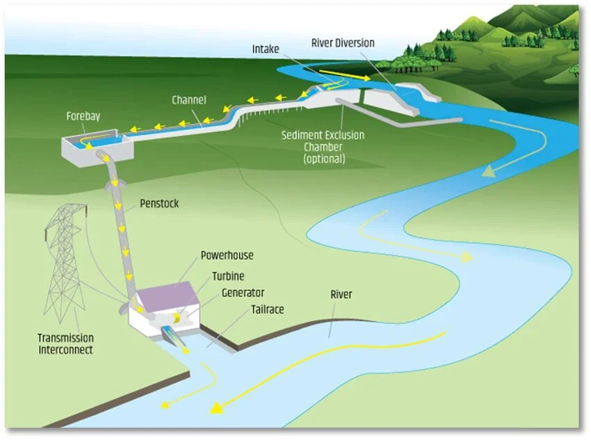
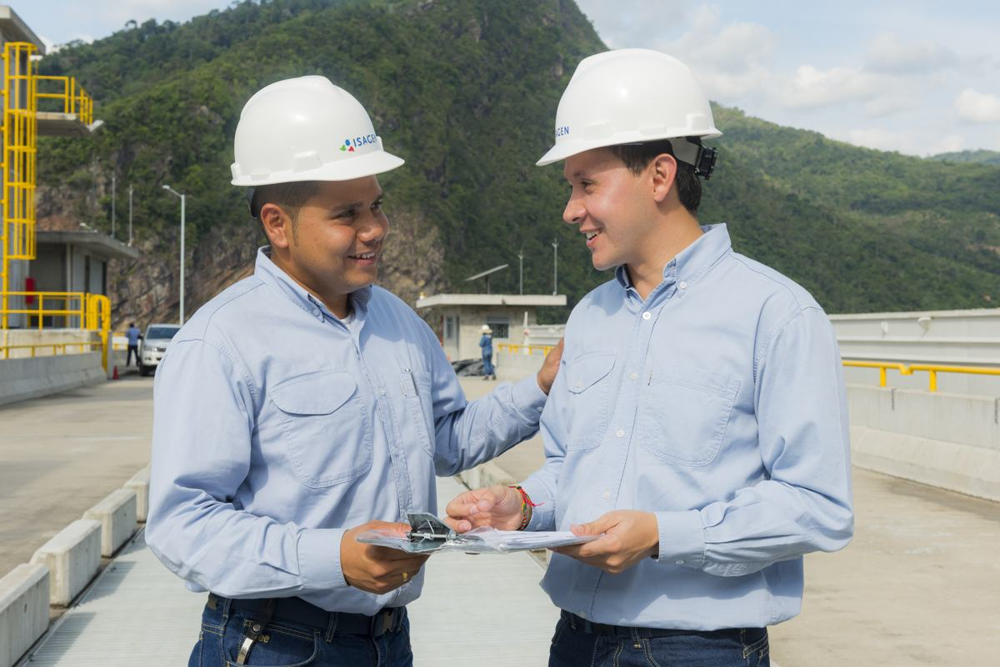

Dónde está
Chaparral, sur del Tolima. Aprovecha el cauce natural del río Amoyá.
Colombia necesitaba más energía renovable y menos plantas térmicas a fósiles. ISAGEN respondió en Chaparral, Tolima, con una central a filo de agua: 80 MW y unos 510 GWh al año, sin embalse.
El proyecto
Tres datos para ubicar la central, y luego el recorrido del agua.
Chaparral, sur del Tolima. Aprovecha el cauce natural del río Amoyá.
Hidroeléctrica a filo de agua de ISAGEN: 80 MW y 510 GWh al año.
Un túnel de 12 km lleva el agua a una casa de máquinas subterránea y la devuelve limpia.


A diferencia de una hidroeléctrica convencional, no necesita presa ni reservorio. Toma el agua del flujo natural del río Amoyá y conserva el caudal ecológico.
Un túnel de 12 km lleva el agua hacia la central. Esa decisión reduce la alteración del paisaje en superficie.
La casa de máquinas está construida de forma subterránea. Allí la caída del agua se convierte en electricidad para el Sistema Interconectado Nacional.
El agua usada en la generación se restituye al cauce sin cargarla de sustancias. El río sigue su curso y se preserva el caudal ecológico.



Mecanismo de Desarrollo Limpio
Porque produce energía renovable y esa reducción de CO2 se puede certificar.
En 2011, Río Amoyá quedó registrado ante la CMNUCC como uno de los proyectos energéticos más relevantes del país en el Mecanismo de Desarrollo Limpio. Genera electricidad sin carbón ni petróleo, bajo las reglas del Protocolo de Kioto, y esa reducción se traduce en certificados (CERs) ligados al financiamiento de carbono.
Usa el flujo del río. No quema combustibles fósiles.
Cumple adicionalidad, medición y verificación.
Las reducciones se certifican y respaldan el carbono del proyecto.
Resultados
La cifra anual y las proyecciones se calculan con la metodología MDL ACM0002.
Ahorro estimado al año
0 toneladas de CO2 equivalente al año
Registrado como proyecto MDL ante la CMNUCC.
Se estima el CO2 que habrían liberado las plantas térmicas a combustibles fósiles para entregar la misma energía al sistema.
La central produce esa electricidad de forma renovable y libre de emisiones de combustión. La diferencia es la reducción certificable.
Desarrollo sostenible
Hoy se puede afirmar el cuidado del paisaje y del río. El impacto social se complementará.

El túnel y la casa de máquinas subterránea reducen la huella visible en el territorio.
El agua vuelve limpia al cauce y se mantiene el caudal ecológico.
Empleo, comunidad y territorio: se añadirá con la información de soporte.
Cierre
Suma energía renovable al sistema y desplaza generación térmica a fósiles.
A filo de agua, sin embalse, con obras subterráneas y restitución del caudal.
El MDL y ACM0002 certifican unas 176.643 toneladas de CO2 equivalente evitadas cada año.
Río Amoyá